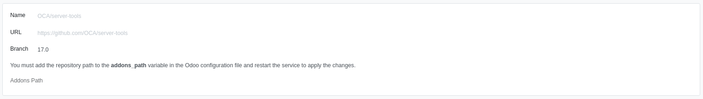

This product allows you to save a Git repository as long as the Odoo modules published in the repository are public.
Once the repository is saved, a subdirectory is internally generated under "../../../data_dir/addons/VERSION" of the instance.
The module searches for the absolute path and within that path clones the repository to make it available in Odoo.
You must keep in mind that the "data_dir/addons/VERSION" directory must have write permissions for the user running the Odoo service.
After cloning the repository, a button to update it is displayed; this button basically performs a "git pull" of the repository.
For technical support, installation, or customization, please contact us:
Email: soporte@nuxpy.com